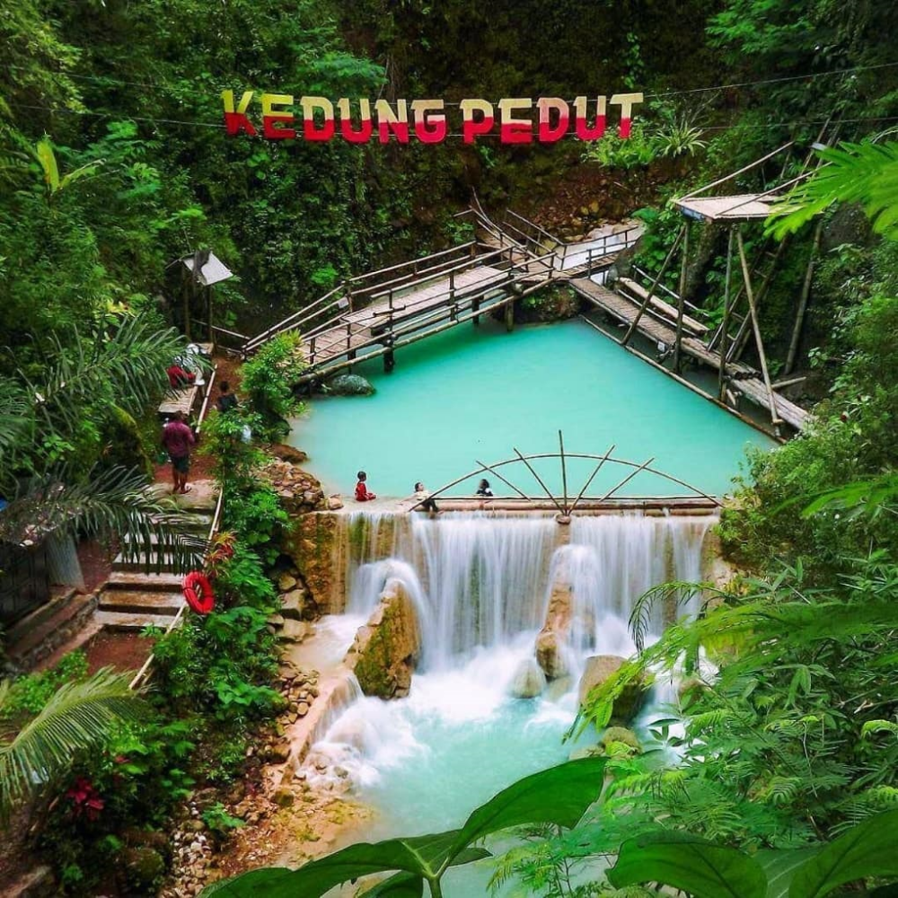

Air Terjun Kedung Pedut
Alamat lokasi ini berada di Jetis Wetan, Semanu, Gunungkidul atau sekitar 50 KM dari arah tenggara Yogyakarta. Rute perjalanan yang Anda tempuh untuk mencapai ke goa ini adalah Anda bisa menaiki bus rusan Jogja-Wonosari dan mencari angkutan umum menuju ke Kecamatan Semanu dan turun di rumah Kepala Dukuh Jetis Wetan. Nantinya, barang-barang Anda akan dititipkan di sana sebelum masuk ke dalam goa. Setelah itu, Anda akan dibawa menyusuri perjalanan sejauh 15 meter untuk bisa tiba di goa. Nama Air terjun Kedung Pedut mungkin masih terdengar asing, atau mungkin juga tidak. Bila tak salah ingat, kawasan ini pernah menjadi lokasi sebuah acara televisi bertajuk traveling di sebuah stasiun swasta. Keindahannya, memang mampu mengalahkan beberapa air terjun ternama di Yogyakarta. Kawasan air terjun kedung pedut ini berada di area perbukitan. Jadi, tidak hanya air terjun ini saja. Melainkan, masih banyak air terjun di sekitar yang juga belum terangkat ke permukaan namanya. Padahal, keindahan mereka luar biasa lho.
Keunikan dari air terjun ini terletak di warna air yang memiliki dua warna yaitu hijau tosca dan berwarna putih. Bagi kalian yang belum pernah sama sekali ke sini, mungkin tidak akan percaya dengan warna yang disajikan. Tetapi, warna air terjun ini memang asli tanpa efek edit sama sekali. Keren bukan? Kawasan ini baru dibuka untuk umum pada tanggal 15 februari 2015. Warga sekiitar biasanya menyebut air terjun ini dengan nama waterpark alami. Karena, di tempat ini ada sebuah kolam renang yang terbentuk secara alami. Airnya pun berasal dari sumber mata air yang terjun dari sebuah air terjun yang jaraknya tidak jauh dari kawasan ini. Secara keseluruhan bila dihitung, kawasan kedung pedut ini mempunyai hampir 5 kedung, yaitu Kedung anyes, kedung lanang, kedung wedok, kedung merak, kedung merang. Dimana setiap kedung mempunyai kedalaman yang cukup beragam. Kedut pedut berasal dari dua kata, yaitu kedung yang berarti genangan, dan pedut yang berarti dalam. Jadi, kedung pedut mempunyai arti genangan air yang cukup dalam. Dilihat dari kedalamannya memang cukup dalam, sekitar 2 sampai 3 meter. Dalam sekali bukan? Bahkan kolam renang buatan jarang memakai kedalaman seperti ini. Sebenarnya, kolam ini ada dua, dimana yang satu berada di dekat air terjun utama. Tetapi, disarankan bagi kalian jangan berenang, cukup menikmatinya saja, karena kawasannya yang cukup berbahaya.
Lokasi kawasan ini berada di Dusun Kembang, Desa Jatimulyo, Kecamatan Girimulyo, Kabupaten Kulonprogo, Daerah Istimewa Yogyakarta. wilayah kulon progo memang jauh dari pusat kota Yogyakarta, sedikit membutuhkan perjuangan pula. Perjalanan pertama bisa berawal dari tugu Yogyakarta, menuju kearah barat menuju ke perempatan Ring road Barat Demak Ijo. Ambil jalan menuju ke jalan godean hingga mencapai ke pasar godean. Lurus ikuti jalan hingga sampai di pasar kenteng. Setelah mencapai sini, lanjutkan perjalanan menuju ke tanjakan menoreh. Setelah mencapai sebuah pertigaan ambil kearah goa kiskendo. Kemudian, menemukan pertigaan kembali ambil arah ke kiri. Jalan terus sekitar 4km hingga sobat native menemukan grojogan mudal. Dari sini belok ke kiri menuju ke air terjun kembang soka. Dari sini, sobat native bisa mengikuti beberapa petunjuk jalan yang akan mengantarkan kalian menuju ke air terjun kedung pedut. Cukup melelahkan memang, tetapi, rasanya semua akan terbayarkan setelah mencapai di lokasi.
berikut sekilas suasana di Air Terjun Kedung Pedut
Source: Youtube